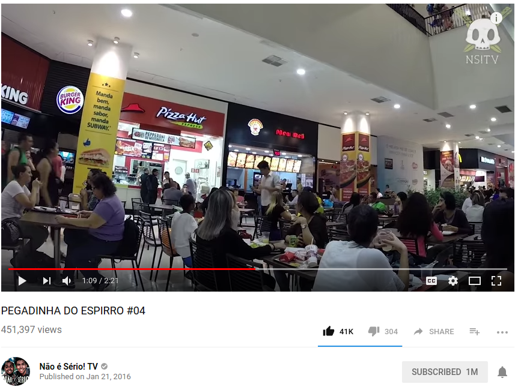

Letramento Digital
como utilizar o YouTube?
Aula 2
Bem-vind@s novamente!
Momento 1 [10min]
Apresentações
Gui e Amanda,
muito prazer!
Quem somos nós?
- Nome, idade, local de nascimento.
- Um plano para o futuro.
Momento 2 [10min]
Sobre o curso
Como acontece?
- Prática e discussões estruturadas.
- Construção colaborativa.
- Abertura para perguntas e respostas.
- Vamos conversar e praticar bastante.
Boas práticas
- Se não entender, pode perguntar!
- Atitude positiva ao aprender!
- Ensine a aprenda com colegas.
- Ouça os colegas com atenção.
Conteúdos
- Como assistir a vídeos no Youtube.
- História dos vídeos na internet.
- O universo de conteúdo no Youtube.
- Modelo de negócios do Youtube.
Encontros
- Bate-papo
- Teoria
- Prática guiada
- Prática livre
Momento 3 [10min]
Saberes Coletivos
Resultados Pesquisa
| Você já fez outro(s) curso(s) de Letramento? | 5/8 |
| Você tem um computador em casa? | 7/8 |
| Você tem um smartphone? | 7/8 |
| Você tem o hábito de acessar a internet? | 7/8 |
| Você tem acesso à internet em casa? | 7/8 |
| Você tem medo de usar o computador? | 4/8 |
| Você sabe fazer pesquisas no Google? | 4/8 |
| Você assiste a vídeos no computador? | 4/8 |
| Você possui uma conta de e-mail? | 5/8 |
| Você usa o WhatsApp? | 5/8 |
O que são smartphones?
Por que quase todos nós
possuímos um smartphone?
Para quê vocês utilizam seus smartphones?
Por fim...
Vemag
Vemag
Vemag
Vemag
Momento 4 [15min]
Revisão Aula 1
Letramento Digital + Web2.0 + YouTube
O que é letramento digital?
Alfabetização para a comunicação com os computadores, gerando inclusão social.
1997

1997
1997
1997
2019
2019
2019
Em 2019:
- Ferramentas e instrumentalização.
- Letramento é ser uma pessoa online.
- Comportamento, etiqueta, cuidados.
O início da internet...
- 1969: 4 computadores conectados
- 1986: 5,000 computadores conectados
Que grupos compunham esses 5,000 computadores?
Centros de Inteligência
Universidades
Agências de Tecnologia
Empresas de Tecnologia
Empresas de Tecnologia
Para poucos!
- Estar na internet era muito caro.
- Além disso, extremamente difícil.
- Códigos complexos e necessários.
1991: Primeiros Websites
Acesso facilitado para pessoas comuns.
Web 2.0
VOCÊ também produz o conteúdo
- Dinâmicos
- Interativos
- Expansíveis
Redes Sociais
Pessoa do Ano da Revista Time

www.youtube.com.br
- Serve para assistir vídeos.
- Funcionamento sob demanda.
- Você escolhe ao que e como assistir.
História
- 2005: Fundado por 3 amigos.
- 2006: Vendido à Google por US$1.65bi.
- 80 mil vídeos assistidos por segundo.
iú-TU-bi
Que vídeos estão no YouTube?
Quase tudo!
Tipos e formatos
- Músicas, shows, apresentações.
- Entrevistas, debates, palestras.
- Informações, cursos, aulas, ...
Sobre todos os assuntos.
Qual comida?
Que arte?
Qual música?
Primeiros Passos
- Acessar
- Buscar
- Tocar
- Controles
Controles

- Tocar e Pausar (k ou espaço)
- Volume (↑ ↓)
- Tela Cheia (f)
- Alterar o tempo (→ ←)
Práticas Livres
- Propagandas Antigas Anos 50
- Ballet O Quebra-Nozes
- Drauzio Varella
- Como dormir melhor
- Curso de computador
- Programa do Jô Roberto Carlos
- Como tocar violão
- São Caetano do Sul
- Elis Regina
Momento 5 [25min]
Teoria [1/3]
Sobre a mídia
Afinal... o que é mídia?
Latim
Medium = meio
Media = meios
Inglês
Media = Mídia
Português
Mídia = Meios
...de comunicação!
O que a mídia vende?
Qual o produto da mídia?
A mídia venda anúncios.
Anunciantes compram anúncios.
Anunciantes são clientes da mídia.
Burger King paga a Globo.
A Globo transmite a propaganda.
Nós assistimos à propaganda do BK.
Resumindo
O Burger King paga a Globo para que a gente assista à sua propaganda.
Em outras palavras
"Se você não paga pelo produto, o produto é você"
Criação de Conteúdos
- Economia
- Política
- Sociedade
- Cultura
- Vida cotidiana
Entretenimento

Celebridades
Quanto mais espectadores,
mais caro o comercial!
E o YouTube?
E as redes sociais?
Momento 5 [25min]
Teoria [2/3]
Modelo de Negócios
Como o YouTube
ganha dinheiro?
Produção de Conteúdo
o que a internet é hoje!


Monetização
- Todos podem incluir um vídeo.
- Todos podem assistir a um vídeo.
- O Youtube vende anúncios.
- Quem é assistido, é pago por isso.
Exemplo

Exemplo
Você sabe o que é um YouTuber?
Estudos de Casos
Manual do Mundo

Drauzio Varella

Lucas Lira

Não é sério TV
Canal do Pirula

JoutJout

Canal Boom

Primitive Technology

Mais opções
- Drauzio Varella
- Globo
- Receitas de comida
- Sesc
- Artesanato
A quais conclusões chegamos?
Todo mundo quer ser visto,
... para poder ganhar dinheiro,
... por isso, há tanto conteúdo!
O que não há no YouTube?
Alguns conteúdos protegidos por direitos autorais*. Pornografia. Violência explícita?
(*às vezes, há!)
QUEM PUBLICA AS INFORMAÇÕES QUE ACHAMOS NO YouTube?
SE ESTÁ NA INTERNET, ENTÃO É VERDADE?
COMO, ENTÃO,
ENCONTRAR INFORMAÇÃO DE QUALIDADE?
COMO PODEMOS CONFIAR?
Mais práticas
- Show do ____
- Entrevista com ____
- Como fazer ____
- Matéria sobre ____
- Curso de ____